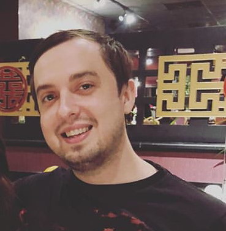

Tyler Lewis
About Me

Welcome to my portfolio! My name is Tyler Lewis and I am embarking on my journey of becoming a junior web developer, thank you for stopping by
to see all of the progress I've made so far! I'll describe myself here so you get an idea about who I am. I graduated from the University of Richmond
in 2016 with a degree in IT Management. I currently do not work in the field but with this bootcamp I plan to change that!
I have always been
interested in computers more from a gaming aspect but knew that I wanted to base my career around IT. I've attempted to learn coding on my own but without
a proper structure I found it difficult to grasp some of the concepts, that is why I am excited for this bootcamp and to work closely with people already in
the field as well as my junior developers in training classmates.
I spend most of my free time playing video games or reading/listening
to audiobooks. I have recently been listening to Stephen King books, I enjoy his storytelling and love to get enthralled in the worlds he builds. As far as gaming
goes I mostly enjoy strategy-based games and card games. I like multiplayer battle royal games but prefer a more story driven single player campaign.